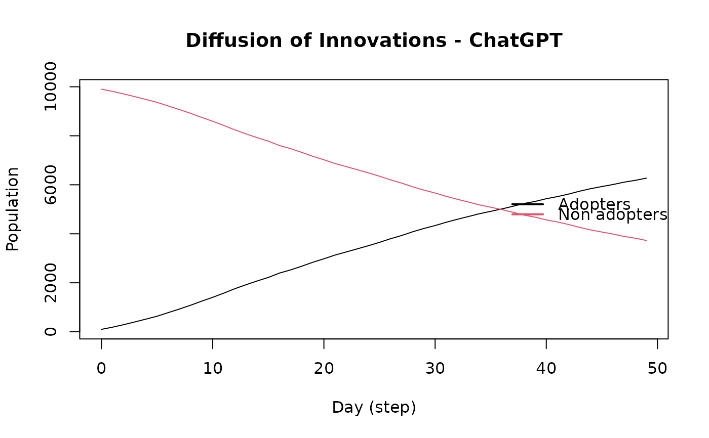

The network diffusion model is a simple model that assumes that the probability of adoption of a behavior is proportional to the number of adopters in the network.
Value
An object of class epiworld_diffnet and epiworld_model.
Details
Different from common epidemiological models, the network diffusion model assumes that the probability of adoption of a behavior is proportional to the number of adopters in the network. The model is defined by the following equations: $$ P(adopt) = \mbox{Logit}^{-1}(prob\_adopt + params * data + exposure) $$ Where exposure is the number of adopters in the agent's network.
Another important difference is that the transmission network is not necesary useful since adoption in this model is not from a particular neighbor.
See also
Other Models:
ModelMeaslesQuarantine(),
ModelSEIR(),
ModelSEIRCONN(),
ModelSEIRD(),
ModelSEIRDCONN(),
ModelSEIRMixing(),
ModelSIR(),
ModelSIRCONN(),
ModelSIRD(),
ModelSIRDCONN(),
ModelSIRLogit(),
ModelSIRMixing(),
ModelSIS(),
ModelSISD(),
ModelSURV(),
epiworld-data
Examples
set.seed(2223)
n <- 10000
# Generating synthetic data on a matrix with 2 columns.
X <- cbind(
age = sample(1:100, n, replace = TRUE),
female = sample.int(2, n, replace = TRUE) - 1
)
adopt_chatgpt <- ModelDiffNet(
"ChatGPT",
prevalence = .01,
prob_adopt = .1,
data = X,
params = c(1, 4)
)
# Simulating a population from smallworld
agents_smallworld(adopt_chatgpt, n, 8, FALSE, .01)
# Running the model for 50 steps
run(adopt_chatgpt, 50)
#> _________________________________________________________________________
#> |Running the model...
#> |||||||||||||||||||||||||||||||||||||||||||||||||||||||||||||||||||||||||
# Plotting the model
plot(adopt_chatgpt)
